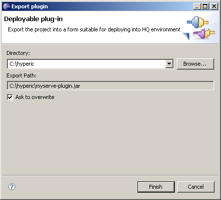

Export wizard will create one simple jar file which is ready to be deployed to HQ server and agents. Files for packaging is determined based of information available in hypclipse plug-in structure. Output of this wizard is jar file named as mytest-plugin.jar if name of the plug-in was 'mystest'.
